🏆 EURO 2024 Matches
| Date | Fixture |
Odds |
Win |
Result |
Over ⚽ = over 0.5 ⚽⚽ = over 1.5 ⚽⚽⚽ = over 2.5 ... ► |
Alerts Home 🏥 = Considerable injuries 🏥🏥 = Major injuries 📉 = Dip in form Note, you may see injuries when expanding match but no alert here, meaning the model does not consider them important. |
Alerts Away 🏥 = Considerable injuries 🏥🏥 = Major injuries 📉 = Dip in form Note, you may see injuries when expanding match but no alert here, meaning the model does not consider them important. |
|
|---|---|---|---|---|---|---|---|---|
| Fri. 14 Jun. | Germany 5:1 Scotland Form: WWWD Form: DLDL |
0.98 vs -0.99 | 1.3 | 69% | 1 | ⚽⚽ 2.5 |
📉 Away team has a dip in form recently |
🏆 Copa America 2024 Matches
| Date | Fixture |
Odds |
Win |
Result |
Over ⚽ = over 0.5 ⚽⚽ = over 1.5 ⚽⚽⚽ = over 2.5 ... ► |
Alerts Home 🏥 = Considerable injuries 🏥🏥 = Major injuries 📉 = Dip in form Note, you may see injuries when expanding match but no alert here, meaning the model does not consider them important. |
Alerts Away 🏥 = Considerable injuries 🏥🏥 = Major injuries 📉 = Dip in form Note, you may see injuries when expanding match but no alert here, meaning the model does not consider them important. |
|---|
🌍 Global Matches
| Date | Fixture |
Odds |
Win |
Result |
Over ⚽ = over 0.5 ⚽⚽ = over 1.5 ⚽⚽⚽ = over 2.5 ... ► |
Alerts Home 🏥 = Considerable injuries 🏥🏥 = Major injuries 📉 = Dip in form Note, you may see injuries when expanding match but no alert here, meaning the model does not consider them important. |
Alerts Away 🏥 = Considerable injuries 🏥🏥 = Major injuries 📉 = Dip in form Note, you may see injuries when expanding match but no alert here, meaning the model does not consider them important. |
|
|---|---|---|---|---|---|---|---|---|
| Fri. 14 Jun. | Víkingur Göta II 19:00 FC Hoyvík Form: WLDW Form: LLLL |
1.69 vs -2.41 | 1.17 | 77% | None | ⚽⚽⚽ 3.18 |
📉 Home team has a dip in form recently | 📉 Away team has a dip in form recently |
| Fri. 14 Jun. | Pharco FC 1:2 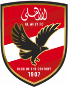 El Ahly Cairo Form: LDLL Form: WWLW |
-1.82 vs 1.19 | 1.12 | 72% | 1 | ⚽ 1.63 |
📉 Home team has a dip in form recently | 📉 Away team has a dip in form recently |
| Fri. 14 Jun. | Wydad Casablanca 1:0 Moghreb Atlético Tétouan Form: DLLW Form: LLDL |
1.18 vs -1.99 | 1.05 | 72% | 1 | 😴 0.7 |
📉 Home team has a dip in form recently | 📉 Away team has a dip in form recently |
| Fri. 14 Jun. | Sociedade Esportiva Palmeiras 2:0 Clube de Regatas Vasco da Gama Form: WWWW Form: LLDL |
1.11 vs -2.3 | 2.62 | 71% | 1 | ⚽⚽ 2.26 |
🏥 Home team has considerable injuries | 📉 Away team has a dip in form recently |
| Fri. 14 Jun. | Mouloudia d'Oujda 0:3 Raja Club Athletic Form: WLDL Form: WWWW |
-1.53 vs 1.08 | 1.08 | 71% | 1 | ⚽ 1.68 |
📉 Home team has a dip in form recently | |
| Fri. 14 Jun. | Germany 5:1 Scotland Form: WWWD Form: DLDL |
0.98 vs -0.99 | 1.3 | 69% | 1 | ⚽⚽ 2.5 |
📉 Away team has a dip in form recently | |
| Fri. 14 Jun. | FK RFS II 4:0 JDFS Alberts Riga Form: WWWW Form: DWWW |
0.9 vs -1.21 | 1.04 | 66% | 1 | ⚽⚽ 2.55 |
||
| Fri. 14 Jun. | MC Algiers 3:2 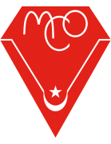 MC Oran Form: DDLW Form: WDWL |
0.81 vs -1.74 | 1.92 | 63% | 1 | ⚽ 1.2 |
📉 Home team has a dip in form recently | 📉 Away team has a dip in form recently |
| Fri. 14 Jun. | FAR Rabat 2:0 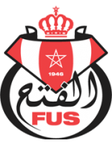 FUS Rabat Form: WWDW Form: WLDW |
0.77 vs -1.48 | 1.52 | 61% | 1 | ⚽ 1.7 |
📉 Away team has a dip in form recently | |
| Fri. 14 Jun. | Tianjin Jinmen Tiger 0:3 Shanghai Port Form: LLWD Form: WWWW |
-0.98 vs 0.68 | 1.08 | 57% | 1 | ⚽⚽ 2.86 |
📉 Home team has a dip in form recently | |
| Fri. 14 Jun. | Valmiera FC 6:1 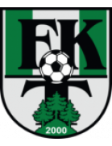 FK Tukums 2000 Form: WWWW Form: LLLL |
0.67 vs -1.42 | 1.1 | 57% | 1 | ⚽⚽ 2.78 |
📉 Away team has a dip in form recently | |
| Fri. 14 Jun. | CR Flamengo 2:1 Grêmio Foot-Ball Porto Alegrense Form: WWDW Form: DLLL |
0.52 vs -1.66 | 1.04 | 51% | 1 | ⚽ 1.77 |
🏥 Home team has considerable injuries | 🏥 📉 Away team has considerable injuries and a dip in form recently |
| Fri. 14 Jun. | Paradou AC 2:0 USM Khenchela Form: LWLL Form: LLDW |
0.51 vs -1.44 | 1.01 | 50% | 1 | ⚽ 1.16 |
📉 Home team has a dip in form recently | 📉 Away team has a dip in form recently |
| Fri. 14 Jun. | Auckland United FC 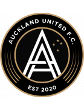 1:2 AET 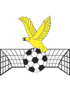 Manurewa AFC Form: WDLD Form: LWDL |
0.49 vs -1.13 | 2.14 | 49% | 0 | ⚽⚽ 2.58 |
📉 Home team has a dip in form recently | 📉 Away team has a dip in form recently |
| Fri. 14 Jun. | Meizhou Hakka 0:0 Shandong Taishan Form: DWDL Form: WDWD |
-1.08 vs 0.49 | 1.09 | 49% | 0.5 | ⚽⚽ 2.5 |
📉 Home team has a dip in form recently | 📉 Away team has a dip in form recently |
| Fri. 14 Jun. | Gualaceo SC 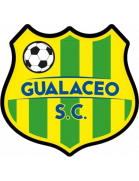 1:0 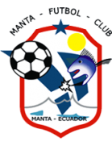 Manta FC Form: DDWW Form: WWDW |
0.46 vs -1.06 | 1.02 | 47% | 1 | ⚽ 1.14 |
||
| Fri. 14 Jun. | Operário Ferroviário Esporte Clube (PR) 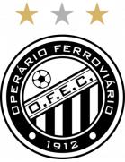 1:0 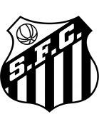 Santos FC Form: WWWL Form: LLLW |
-1.33 vs 0.46 | n/a | 47% | 0 | 😴 0.94 |
📉 Home team has a dip in form recently | 🏥 📉 Away team has considerable injuries and a dip in form recently |
| Fri. 14 Jun. | Torpedo-BelAZ 2 Zhodino 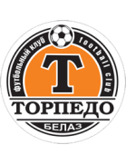 0:2 FK Molodechno Form: WLLL Form: WWLW |
-0.91 vs 0.33 | n/a | 36% | 1 | ⚽⚽ 2.73 |
📉 Home team has a dip in form recently | 📉 Away team has a dip in form recently |
| Fri. 14 Jun. | MAS Fes 0:1 Olympique Safi Form: WDWL Form: DWLW |
0.31 vs -1.06 | 3.05 | 35% | 0 | 😴 0.94 |
📉 Home team has a dip in form recently | 📉 Away team has a dip in form recently |
| Fri. 14 Jun. | Club Athlétique Bizertin 16:30 US Tataouine Form: DLDW Form: WLLL |
0.3 vs -1.2 | 3.1 | 34% | None | 😴 0.99 |
📉 Home team has a dip in form recently | 📉 Away team has a dip in form recently |
| Fri. 14 Jun. | CA Talleres 2:1 Club Atlético Platense Form: LWWW Form: DWLL |
0.27 vs -1.6 | n/a | 32% | 1 | ⚽ 1.96 |
🏥🏥 Home team has MAJOR injuries | 📉 Away team has a dip in form recently |
| Fri. 14 Jun. | FK Slonim 2017 1:0 Lokomotiv Gomel Form: WLDW Form: LDLL |
-0.94 vs 0.26 | 2.58 | 31% | 0 | ⚽ 1.48 |
📉 Home team has a dip in form recently | 📉 Away team has a dip in form recently |
| Fri. 14 Jun. | Ittihad Tanger 0:0 SC Chabab Mohammédia Form: DLWD Form: LLLD |
0.25 vs -1.12 | n/a | 30% | 0.5 | 😴 0.94 |
📉 Home team has a dip in form recently | 📉 Away team has a dip in form recently |
| Fri. 14 Jun. | Örgryte IS 1:1 GIF Sundsvall Form: LWDL Form: LLDL |
0.22 vs -1.12 | 1.39 | 28% | 0.5 | ⚽ 1.93 |
📉 Home team has a dip in form recently | 📉 Away team has a dip in form recently |
| Fri. 14 Jun. | JS Saoura 1:2 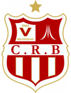 CR Belouizdad Form: LWDL Form: WDLW |
-1.0 vs 0.2 | 1.08 | 26% | 1 | ⚽ 1.72 |
📉 Home team has a dip in form recently | 📉 Away team has a dip in form recently |
| Fri. 14 Jun. | Union Touarga Sportif 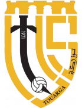 3:3 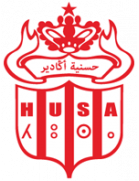 Hassania d'Agadir Form: WWWD Form: LDWD |
0.2 vs -1.01 | 1.91 | 26% | 0.5 | ⚽ 1.94 |
📉 Away team has a dip in form recently | |
| Fri. 14 Jun. | MC El Bayadh 1:0 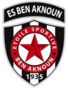 ES Ben Aknoun Form: LWLW Form: WWLL |
0.19 vs -1.02 | 1.05 | 25% | 1 | ⚽ 1.51 |
📉 Home team has a dip in form recently | 📉 Away team has a dip in form recently |
| Fri. 14 Jun. | Isloch Minsk Region 1:0 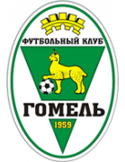 FK Gomel Form: LWWL Form: DWDL |
0.15 vs -0.74 | n/a | 22% | 1 | ⚽ 1.52 |
📉 Home team has a dip in form recently | 📉 Away team has a dip in form recently |
| Fri. 14 Jun. | Nantong Zhiyun 0:1 Shenzhen Peng City Form: LLWD Form: LWWW |
-0.44 vs 0.14 | 1.09 | 21% | 1 | ⚽ 1.67 |
📉 Home team has a dip in form recently | |
| Fri. 14 Jun. | Club Athletico Paranaense 3:1 Criciúma Esporte Clube Form: LWDD Form: LWDW |
0.13 vs -1.0 | n/a | 20% | 1 | ⚽⚽ 2.04 |
🏥 📉 Home team has considerable injuries and a dip in form recently | |
| Fri. 14 Jun. | ASO Chlef 2:1 US Biskra Form: LDWW Form: LLWL |
0.11 vs -1.03 | 1.06 | 19% | 1 | ⚽⚽ 2.07 |
📉 Away team has a dip in form recently | |
| Fri. 14 Jun. | Miramar Misiones 1:0 CA Cerro Form: WLWW Form: WWWL |
0.11 vs -0.88 | n/a | 19% | 1 | ⚽ 1.62 |
📉 Home team has a dip in form recently | 📉 Away team has a dip in form recently |
| Fri. 14 Jun. | ABFF U17 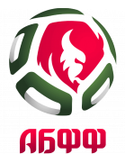 3:1 BATE 2 Borisov Form: LLLW Form: DDLW |
-0.6 vs 0.1 | n/a | 18% | 0 | ⚽ 1.49 |
📉 Home team has a dip in form recently | 📉 Away team has a dip in form recently |
| Fri. 14 Jun. | CS Constantine 1:2 ES Sétif Form: DDWL Form: DLWW |
0.1 vs -0.87 | n/a | 18% | 0 | ⚽⚽ 2.92 |
📉 Home team has a dip in form recently | 📉 Away team has a dip in form recently |
| Fri. 14 Jun. | AS Soliman 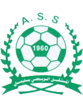 16:30 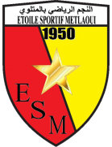 Etoile Sportive Metlaoui Form: WWDW Form: WLDD |
0.06 vs -1.06 | 1.93 | 15% | None | ⚽ 1.2 |
📉 Away team has a dip in form recently | |
| Fri. 14 Jun. | CA Newell's Old Boys 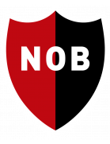 0:2 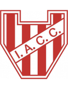 Instituto ACC Form: LWLL Form: DLWW |
0.06 vs -0.7 | 1.85 | 14% | 0 | 😴 0.63 |
📉 Home team has a dip in form recently | 📉 Away team has a dip in form recently |
| Fri. 14 Jun. | Akzhayik Uralsk 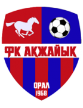 0:2 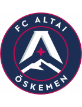 Altay Oskemen Form: LLDD Form: DWWW |
0.04 vs -0.79 | 1.08 | 13% | 0 | ⚽ 1.02 |
📉 Home team has a dip in form recently | |
| Fri. 14 Jun. | FK Vitebsk 0:1 Torpedo-BelAZ Zhodino Form: WWDL Form: WWWW |
-0.63 vs 0.01 | 1.46 | 11% | 1 | 😴 0.73 |
📉 Home team has a dip in form recently | |
| Fri. 14 Jun. | Amazonas FC 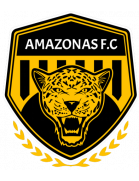 0:1 Associação Chapecoense de Futebol Form: WLWL Form: DWLL |
0.01 vs -0.76 | 1.54 | 11% | 0 | 😴 0.87 |
📉 Home team has a dip in form recently | 📉 Away team has a dip in form recently |
| Fri. 14 Jun. | Esporte Clube Bahia 1:0 Fortaleza Esporte Clube Form: DWDL Form: WLLL |
0.01 vs -0.89 | 1.01 | 11% | 1 | ⚽⚽⚽ 3.65 |
📉 Home team has a dip in form recently | 📉 Away team has a dip in form recently |
| Fri. 14 Jun. | NC Magra 2:3 USM Alger Form: DWDL Form: DLWW |
-0.71 vs 0.01 | 1.19 | 11% | 1 | ⚽ 1.53 |
📉 Home team has a dip in form recently | 📉 Away team has a dip in form recently |
| Fri. 14 Jun. | Metallurg Bekabad 0:0 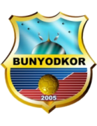 Bunyodkor Tashkent Form: DDLD Form: WLLD |
-0.01 vs -0.74 | 1.05 | 10% | 0.5 | ⚽ 1.6 |
📉 Home team has a dip in form recently | 📉 Away team has a dip in form recently |
| Fri. 14 Jun. | Union Sportive de Ben Guerdane 16:30 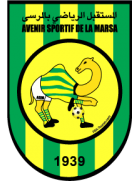 AS Marsa Form: LWLL Form: DWLL |
-0.03 vs -0.82 | 1.04 | 9% | None | ⚽ 1.1 |
📉 Home team has a dip in form recently | 📉 Away team has a dip in form recently |
| Fri. 14 Jun. | Kaysar Zhas Kyzylorda 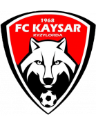 1:2 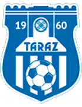 FK Taraz Form: WLLL Form: LWDW |
-0.12 vs -0.52 | 1.98 | 8% | 0 | ⚽ 1.54 |
📉 Home team has a dip in form recently | |
| Fri. 14 Jun. | Club Atlético Lanús 2:0 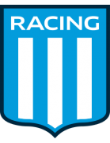 Racing Club Form: WLDW Form: WWWL |
-0.77 vs -0.12 | 3.85 | 8% | 0 | ⚽ 1.96 |
📉 Home team has a dip in form recently | 🏥 📉 Away team has considerable injuries and a dip in form recently |
| Fri. 14 Jun. | FC Tallinn 18:00 Tartu JK Welco Form: WWWW Form: WDWD |
-0.16 vs -0.37 | n/a | 7% | None | ⚽⚽⚽ 3.29 |
📉 Away team has a dip in form recently | |
| Fri. 14 Jun. | Sport Club Internacional 0:0 São Paulo Futebol Clube Form: LDWW Form: WDDL |
-0.17 vs -0.79 | 2.42 | 7% | 0.5 | ⚽⚽ 2.02 |
🏥 Home team has considerable injuries | 📉 Away team has a dip in form recently |
| Fri. 14 Jun. | Cleopatra FC 1:2 Zamalek SC Form: LWWL Form: LWWW |
-0.6 vs -0.21 | n/a | 6% | 1 | ⚽⚽ 2.29 |
📉 Home team has a dip in form recently | |
| Fri. 14 Jun. | EGS Gafsa 16:30 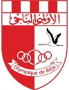 Olympique Beja Form: DWDL Form: LWWW |
-0.24 vs -0.4 | 2.48 | 5% | None | 😴 0.91 |
📉 Home team has a dip in form recently | |
| Fri. 14 Jun. | Okzhetpes Kokshetau 1:0 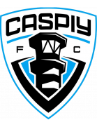 Kaspiy Aktau Form: WDWW Form: WLDL |
-0.78 vs -0.26 | 1.13 | 5% | 0 | ⚽ 1.09 |
🏥 Home team has considerable injuries | 📉 Away team has a dip in form recently |
| Fri. 14 Jun. | Club Athletic Youssoufia Berrechid 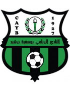 2:3 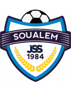 Jeunesse Sportive de Soualem Form: DLLL Form: DLLW |
-0.31 vs -0.4 | 3.1 | 4% | 0 | ⚽ 1.37 |
📉 Home team has a dip in form recently | 📉 Away team has a dip in form recently |
Last updated 12:57:19 2024-06-26
Privacy Policy - 18+. Gamble Responsibly. - Terms